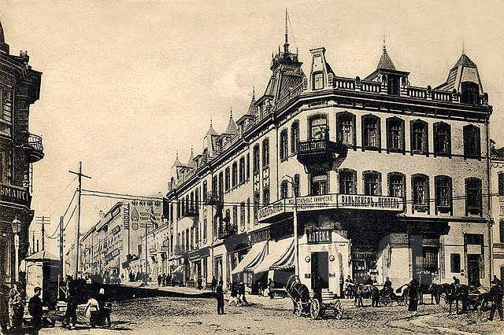
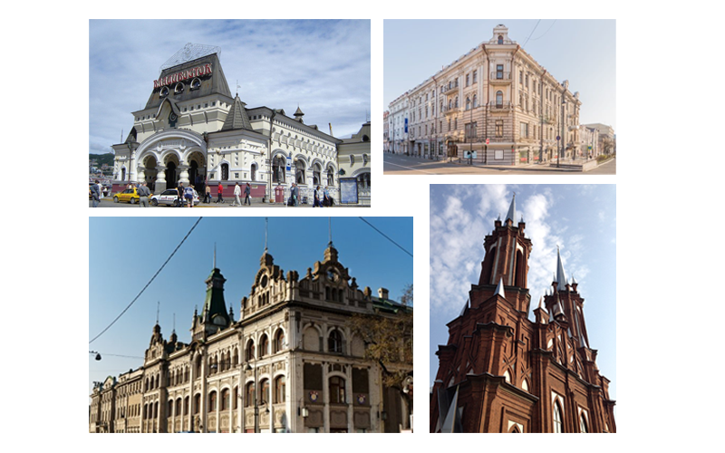

Основание города
В течение продолжительного времени российское правительство искало опорный пункт на Дальнем Востоке; эту роль поочерёдно выполняли Охотск, Аян, Петропавловск-Камчатский, Николаевск-на-Амуре. К середине XIX века поиски форпоста зашли в тупик: ни один из портов не отвечал необходимому требованию: иметь удобную и защищённую гавань, рядом с торговыми путями. Силами генерал-губернатора Восточной Сибири Николая Муравьёва-Амурского был заключён Айгунский договор, началось активное исследование Приамурья, и позже, в результате подписания Тяньцзиньского и Пекинского трактатов, к России были присоединены в том числе территории современного Владивостока. Само название Владивосток появилось ещё в середине 1859 года, употреблялось в газетных статьях и обозначало бухту. 20 июня (2 июля) 1860 года транспорт Сибирской флотилии «Манджур» под командованием капитан-лейтенанта Алексея Карловича Шефнера доставил в бухту Золотой Рог воинское подразделение для основания военного поста, который теперь уже официально получил название Владивосток.
Архитектура
Исторически Владивосток развивался по канонам европейских архитектурных традиций. На сегодняшний день в городе насчитывается около 500 архитектурных памятников и более 100 фортификационных сооружений Владивостокской крепости.
Места для посещения
Современный, меняющийся на глазах город: например, всего за несколько последних лет там были построены уникальные мосты Русский и Золотой рог, гигантский университетский кампус, Приморский оперный театр.